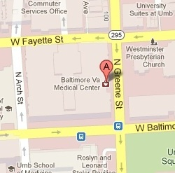

VA Medical Facility Finder
Baltimore VA Medical Center
Located in a vibrant city neighborhood on the campus of the University of Maryland at Baltimore
Specialized clinics:
- Epilepsy Center of Excellence
- Geriatric Reserach, Education and Clinical Center
- Mental Illness Research, Education and Clinical Center

Contact us
10 North Greene Street
Baltimore, MD 21201
